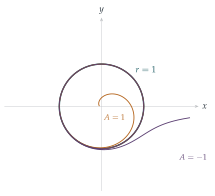

STEP III 2015, 문제 8
계속 읽기 전에 문제를 먼저 읽어 보자. 문제는 STEP Support Programme의 문제 데이터베이스에 있다: step.maths.org/questions/15-s3-q8
도입
자연의 많은 계는 처음 상태와 상관없이 일정한 리듬에 자리 잡는다. 뛰는 심장, 우는 귀뚜라미, 고르게 활을 긋는 바이올린 현, 포식자와 피식자의 개체 수 순환이 그렇다. 이들을 조금 흔들어도 다시 같은 리듬으로 돌아온다. 미분방정식(differential equation)의 언어로 말하면, 이런 계의 해는 하나의 닫힌 고리에 다가가는데, 이 고리를 극한 순환(limit cycle)이라고 한다.
이 문제는 극한 순환을 하나 직접 만든다. 방정식은 \(x\)와 \(y\)로는 손댈 수 없어 보이지만, 극좌표(polar coordinates)로 바꾸면 풀 수 있는 꼴로 단순해지고, 해는 안쪽과 바깥쪽 모두에서 단위원으로 감겨 들어가는 나선임이 드러난다. 핵심이 되는 수, 즉 문제의 대칭성에 맞는 좌표를 고르는 일은 이 책 전체에서 거듭 써 온 방법이다.
시작하기 전에
두 방정식에는 \(x\,\mathrm{d}x + y\,\mathrm{d}y\)와 \(x\,\mathrm{d}y - y\,\mathrm{d}x\)라는 조합이 숨어 있다. 이들을 극좌표로 나타내면 무엇인가?
\(r^2 = x^2 + y^2\)이므로 미분하면 \(x\,\mathrm{d}x + y\,\mathrm{d}y = r\,\mathrm{d}r\)이다. 또 \(x\,\mathrm{d}y - y\,\mathrm{d}x = r^2\,\mathrm{d}\theta\)이다(이것은 4.9 절의 넓이 공식이다). 이 두 항등식 덕분에 변수 변환이 거의 수월해진다. 방정식을 이 조합들만 나타나도록 다시 쓰면 된다.
차근차근 풀기
단계 1 극좌표로 본 소문항 (i)
방정식을 \((y + x)\,\mathrm{d}y - (y - x)\,\mathrm{d}x = 0\)으로 쓰고 정리하면 다음과 같다. \[(x\,\mathrm{d}x + y\,\mathrm{d}y) + (x\,\mathrm{d}y - y\,\mathrm{d}x) = 0.\]
전개하여 이 정리가 맞는지 확인하라. 그다음 위의 두 항등식을 써라.
\((y + x)\,\mathrm{d}y - (y - x)\,\mathrm{d}x = y\,\mathrm{d}y + x\,\mathrm{d}y - y\,\mathrm{d}x + x\,\mathrm{d}x\)이고, 이는 위의 식과 같다. 극좌표로 쓰면 \(r\,\mathrm{d}r + r^2\,\mathrm{d}\theta = 0\)이며, (\(r > 0\)에서) \(r^2\,\mathrm{d}\theta\)로 나누면 다음을 얻는다. \[\frac{\mathrm{d}r}{\mathrm{d}\theta} + r = 0. \qed\] 해는 \(r = Ce^{-\theta}\)이다. 이는 로그 나선(logarithmic spiral)으로, \(\theta\)가 증가하면 원점을 향해 감겨 들어가고 \(\theta\)가 감소하면 무한히 멀어진다.
단계 2 소문항 (ii)
새 방정식은 옛 방정식에 \(x^2 + y^2 = r^2\)이 들어간 항을 더한 것이다. 같은 방법으로 다시 쓰고 \(\frac{\mathrm{d}r}{\mathrm{d}\theta}\)를 구하라.
방정식은 \(\bigl(y + x - xr^2\bigr)\,\mathrm{d}y - \bigl(y - x - yr^2\bigr)\,\mathrm{d}x = 0\), 즉 \[\bigl[(y + x)\,\mathrm{d}y - (y - x)\,\mathrm{d}x\bigr] - r^2\bigl(x\,\mathrm{d}y - y\,\mathrm{d}x\bigr) = 0.\] 첫째 괄호는 앞에서처럼 \(r\,\mathrm{d}r + r^2\,\mathrm{d}\theta\)이고, 둘째 괄호는 \(r^2\,\mathrm{d}\theta\)이다. 따라서 \(r\,\mathrm{d}r + r^2(1 - r^2)\,\mathrm{d}\theta = 0\)이고, 다음을 얻는다. \[\frac{\mathrm{d}r}{\mathrm{d}\theta} = r^3 - r.\]
이 식은 \(r\)에 대해 선형(linear)이 아니지만, \(u = r^{-2}\)에 대해서는 선형이 된다. \(u\)는 어떤 방정식을 만족하는가?
\(u = r^{-2}\)로 두면 \(\frac{\mathrm{d}u}{\mathrm{d}\theta} = -2r^{-3}\frac{\mathrm{d}r}{\mathrm{d}\theta} = -2r^{-3}(r^3 - r) = -2 + 2u\)이다. 따라서 \(\frac{\mathrm{d}u}{\mathrm{d}\theta} - 2u = -2\)이고, 그 해는 \(u = 1 + Ae^{2\theta}\)이다. 그러므로 \[r^2 = \frac{1}{1 + Ae^{2\theta}}. \qed\]
단계 3 세 종류의 해
\(A = 0\): \(r = 1\). 단위원이 해이다.
\(A > 0\): 항상 \(r < 1\)이다. \(\theta \to -\infty\)일 때 \(r \to 1\)이고, \(\theta \to +\infty\)일 때 \(r \to 0\)이다. 곡선은 원과 원점 사이를 나선을 그리며 돈다.
\(A < 0\): \(r > 1\)이고, 이 공식은 \(1 + Ae^{2\theta} > 0\), 즉 \(\theta < \frac12\ln\left(-\frac1A\right)\)인 동안에만 뜻이 있다. \(\theta \to -\infty\)일 때 \(r \to 1\)이고, \(\theta\)가 그 경계에 다가가면 \(r \to \infty\)이다. 곡선은 원과 무한 사이를 나선을 그리며 돈다.
따라서 모든 해곡선은 \(\theta \to -\infty\)일 때 안쪽 또는 바깥쪽에서 단위원에 다가간다(그림 8.4.1).

돌아보기
대칭성을 이용하라. 방정식은 모든 방향을 똑같이 다루었고, 극좌표는 그 사실을 눈에 보이게 해 주었다.
표준적인 조합을 알아보라. \(x\,\mathrm{d}x + y\,\mathrm{d}y = r\,\mathrm{d}r\)와 \(x\,\mathrm{d}y - y\,\mathrm{d}x = r^2\,\mathrm{d}\theta\)가 일의 대부분을 해냈다.
치환으로 선형화한다. 비선형 방정식 \(r' = r^3 - r\)은 \(u = r^{-2}\)에 대해 선형이 되었다(베르누이 방정식(Bernoulli equation)).
숨은 수학
앙리 푸앵카레(Henri Poincaré)는 1880년대에 평면 위 미분방정식의 정성적 거동을 연구하면서 극한 순환을 도입했다. 문제의 방정식을 평면 위를 움직이는 점의 경로를 나타내는 것으로 해석해 보자. 단위원은 고립된 닫힌 궤도(orbit)이고, 그 근처의 모든 궤도는 (시간의 방향에 따라) 단위원을 향해 감겨 들어가거나 단위원에서 멀어진다. 1926년 네덜란드의 공학자 발타사르 판데르폴(Balthasar van der Pol)은 진공관이 들어간 전기 회로에서 극한 순환을 발견했고, 비슷한 방정식이 심장 박동을 묘사한다고 제안했다. 극한 순환은 스스로 유지되는 안정된 리듬을 가진 모든 계의 모형이 된다. 일주기 생체 시계, 신경 자극, 포식자와 피식자 개체 수의 순환이 그 예이다.
평면에는 혼돈이 없다
푸앵카레–벤딕손 정리(Poincaré–Bendixson theorem)에 따르면, 평면 위의 매끄러운 계에서 유계인 영역에 머무르면서 평형점(equilibrium)에 다가가지 않는 궤도는 반드시 닫힌 궤도에 다가간다. 따라서 2차원에서 장기적인 거동은 평형점과 순환에 한정된다. 궤도끼리 교차할 수 없으므로 혼돈(chaos)이 생길 여지가 없다. 혼돈에는 적어도 3차원이 필요한데, 이는 1963년 에드워드 로렌즈(Edward Lorenz)가 대류를 나타내는 유명한 세 변수 모형(“나비”)으로 발견한 사실이다. 이산 시간에서는 8.7 절에서 보듯이 1차원에서도 혼돈이 가능하다.
풀리지 않은 문제
1900년 다비트 힐베르트(David Hilbert)는 그의 열여섯 번째 문제의 일부로 다음을 물었다. \(P\)와 \(Q\)가 \(n\)차 다항식일 때, 계 \(x' = P(x, y)\), \(y' = Q(x, y)\)가 가질 수 있는 극한 순환의 최대 개수는 얼마인가? 이는 \(n = 2\)일 때조차 아직 알려져 있지 않다. 이 경우 극한 순환이 네 개인 계는 알려져 있지만, 그보다 많을 수 있는지는 모른다. 이것은 힐베르트의 문제 가운데 완전히 미해결로 남아 있는 아주 드문 문제 중 하나이다.
사고 기술
문제가 회전 대칭을 가지면 극좌표를 쓰고, 다른 대칭을 가지면 그 대칭을 존중하는 좌표를 찾아라.
알맞은 좌표는 손댈 수 없던 방정식을 변수분리형(separable) 방정식으로 바꾸었고, 해의 기하(원과 나선)를 뚜렷하게 보여 주었다.
더 도전하기
나선. 소문항 (i)의 해 \(r = e^{-\theta}\)에 대하여, 이 곡선이 원점에서 나가는 모든 반직선과 같은 각 \(45^\circ\)로 만남을 보여라. (로그 나선을 등각 나선(equiangular spiral)이라고 부르는 이유가 이것이다.)
극좌표 항등식. \(x\,\mathrm{d}x + y\,\mathrm{d}y = r\,\mathrm{d}r\)와 \(x\,\mathrm{d}y - y\,\mathrm{d}x = r^2\,\mathrm{d}\theta\)를 증명하라.
시간에 따른 계. 계 \(\dot r = r(1 - r^2)\), \(\dot\theta = 1\)을 생각하자. \(r(0) > 0\)인 모든 해가 \(t \to \infty\)일 때 단위원에 다가감을 보여라. 이 계를 \(x\)와 \(y\)로 나타내라.
두 개의 순환. \(r = 1\)과 \(r = 2\)에 극한 순환을 두 개 가지며, 하나는 끌어당기고 하나는 밀어내는, \(\dot r = f(r)\), \(\dot\theta = 1\) 꼴의 계를 찾아라.
더 읽을거리
Steven Strogatz, Nonlinear Dynamics and Chaos (CRC Press). 7장에서 극한 순환과 푸앵카레–벤딕손 정리를 다룬다.
Steven Strogatz, Sync (Hyperion). 자연의 리듬과 동기화를 다룬 교양서이다.
James Gleick, Chaos: Making a New Science (Penguin). 로렌즈와 혼돈의 발견 이야기이다.